Задание #1
- Скачать на рабочий стол архив "mobi" и разархивировать его — в дальнейшем мы будем работать с этой заготовкой.
-
Cкачать шрифт OpenSans-Regular.ttf и установить его:
-
Скачать на рабочий стол и открыть PSD-макет "mobi-home-desktop.psd" в Photoshop-e.
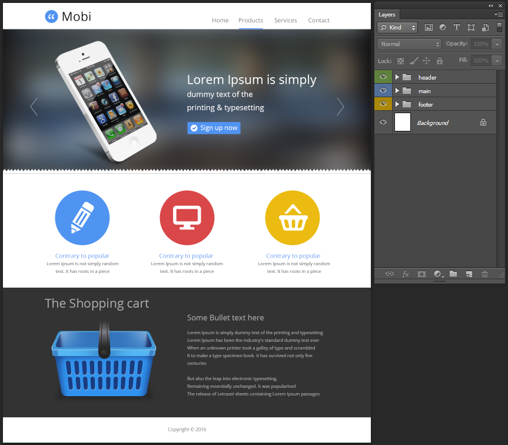
В PSD-макете мы можем видеть дизайн а так же мы можем использовать его чтобы:
- Увидеть шрифты которые используются в дизайне.
- Взять все необходимые размеры, включая отступы, размеры шрифта, высоту строки и прочее.
- Взять все цвета и перенести их в CSS-код.
- Экспортировать все необходимые изображения.
- Скопировать весь текст который используется в макете.
Декомпозиция макета
Если говорить о базовой структуре страницы, то можно выделить следующие независимые компоненты:
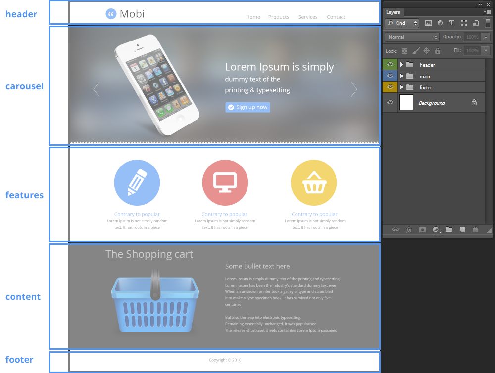- header — верхняя часть сайта, хедер, область содержащая логотип и список ссылок.
- carousel — компонент содержащий список слайдов и навигацию между слайдами.
- features — список особенностей продукта.
- content — описание продукта.
- footer — футер, подвал, область где размещаются копирайты (информация о владельцах этого сайта), дополнительная навигация.
Компоненты идущие между хедером и футером обычно объединяют одним контейнером с названием "main".
Давайте сделаем общую структуру и вместо компонентов просто добавим временные картинки с их изображением.
Задание #2
- Открыть в папке mobi файл index.html с помощью редактора и добавить в элемент body следующий HTML-код:
<div class="header"></div> <div class="main"> <div class="carousel"></div> <div class="features"></div> <div class="content"></div> </div> <div class="footer"></div>Мы добавили контейнеры для наших компонентов. Теперь давайте добавим внутрь контейнеров изображения этих компонентов.
-
В Photoshop-e в открытом PSD-макете нажать клавишу М (режим прямоугольного выделения) и выделить область хедера потянув с левого верхнего угла до правого нижнего.
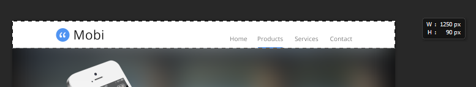
Затем:- нажать Ctrl Shift C (копировать в буфер объединённые слои).
- нажать Ctrl N (создать новый документ) и задать ему имя header
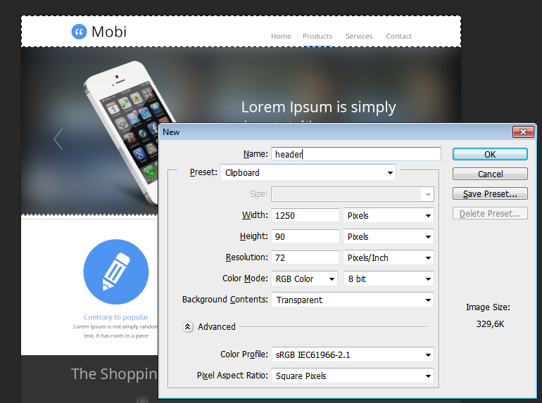 -
нажать Ctrl V (вставить из буфера изображение)
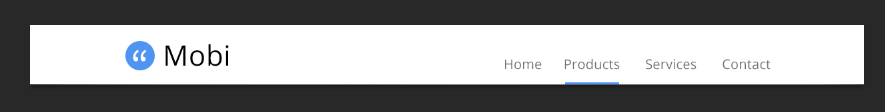 -
нажать Ctrl Alt Shift S (сохранить изображения для Веб)
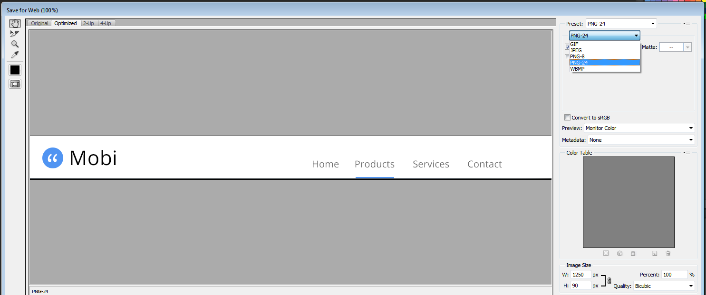 выбрать PNG-24 и нажать кнопку Save... (сохранить). - сохранить изображение в подпапке img вашей папки mobi с названием header.png.
-
Открыть index.html в редакторе кода и обновить то что внутри body:
<div class="header"><img src="img/header.png" /></div> <div class="main"> <div class="carousel"></div> <div class="features"></div> <div class="content"></div> </div> <div class="footer"></div> - Открыть index.html в браузере.
-
Проделать тоже самое для:
- carousel
- features
- content
- footer
Если возникли проблемы с копированием и сохранением изображений, вот ссылки на сохранённые изображения:
{kind=link}
{kind=link}
{kind=link}
{kind=link}
{kind=link}
В итоге после добавления всех изображений, HTML страница в браузере должна выглядеть так:
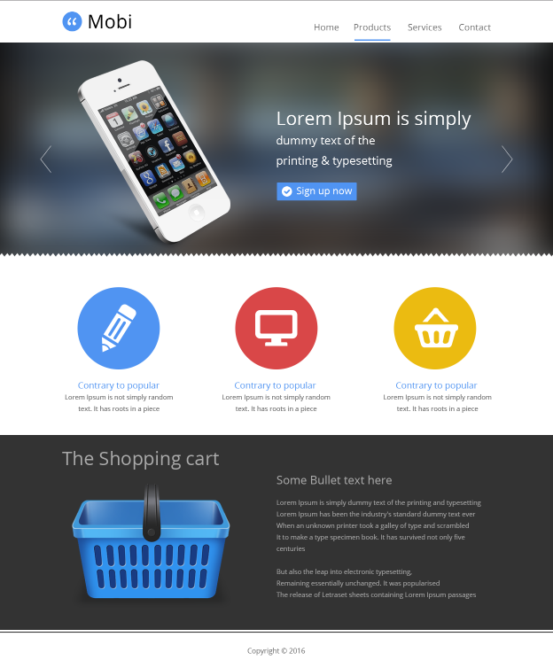Какие из этих компонентов мы можем сверстать?
Попробуем сверстать два нижних компонента — footer и content.
footer
HTML
Очевидно что в блоке footer находится параграф с текстом.
Задание #3
- Открыть Photoshop с открытым PSD-файлом и скопировать текст из слоя с названием Copyright © 2016.
-
Чтобы выделять одним кликом по тексту нужный слой в Photoshop-е следует выствить галочку Автовыбор - Слой
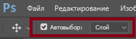
После чего нажать V (режим выбора слоя) и кликнуть на сам текст
При этом в панели Слои должен выделиться слой с текстом.
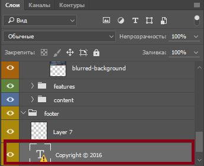 -
Сделать двойной клик на значке T чтобы выделить текст
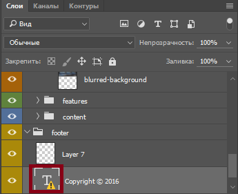 -
Если появилось сообщение о том, что отсутствует шрифт OpenSans
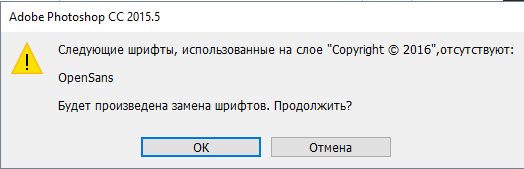
Вернуться к заданию #1, установить шрифт, закрыть Photoshop и открыть его снова и октрыть в нём PSD-файл. -
Когда текст выделился, скопировать его в буфер обмена
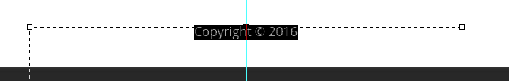 -
Открыть index.html в редакторе кода и заменить изображением в блоке с классом footer
<img src="img/footer.png" />на параграф<p></p>. -
Вставить из буфера текст внутрь параграфа:
<p>Copyright © 2016</p>
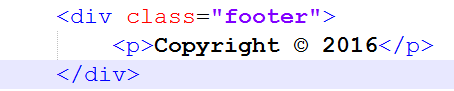 -
Обновить страницу в браузере
-
У нас проблема с символом авторских прав ©, давайте заменим этот значок на следующий код
©
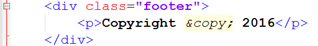 -
Обновить страницу в браузере
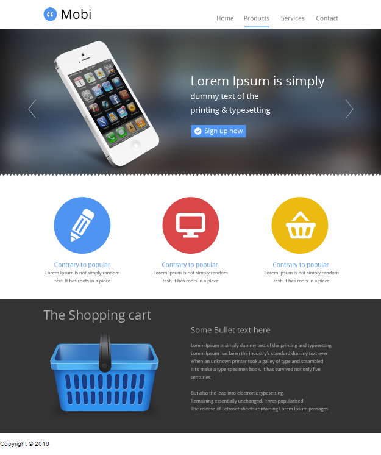
CSS
Теперь нам нужно добавить стили для того чтобы футер отображался как на макете.
Для этого нам нужно найти в PSD следующие параметры блока:
- Размер шрифта
- Цвет текста
- Выравнивание текста
- Максимальная ширина области для текста
- Отступы в блоке
Размер шрифта
Задание #4
-
Открыть Photoshop и снова выбрать слой с текстом футера и сделать двойной клик на значке T чтобы выделить текст
-
Посмотреть вверху на панель с информацией о тексте
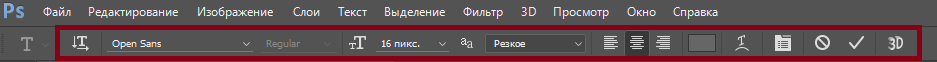
Обратить внимание на размер шрифта — 16px. -
Для более полной информации про текст открыть панель Символ
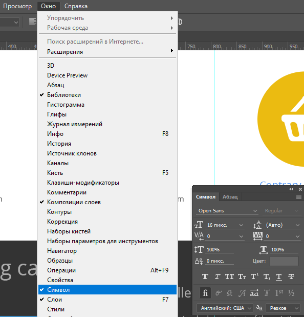 Здесь видны параметры: размер шрифта, высота строки, цвет. -
Открыть в редакторе кода файл css/main.css и добавить правило для элемента html — базовый размер шрифта 10px:
Теперь можно задавать размер шрифта в единицах rem (работают с Internet Explorer 9 и выше, для более ранних версий IE надо использовать px)html { font-size: 10px; }html { font-size: 10px; } .footer { /* 1 rem = 1 размер шрифта элемента HTML = 10px */ font-size: 1.6rem; }
Мы задали корректный размер шрифта используя единицы rem, а значение размера шрифта взяли из Photoshop-а.
Цвет текста
Задание #5
-
Открыть Photoshop и панель Символ и кликнуть на образец цвета
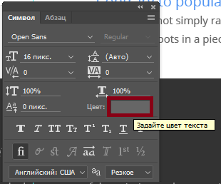 -
Скопировать 16-ричное значение цвета в буфер обмена Ctrl C
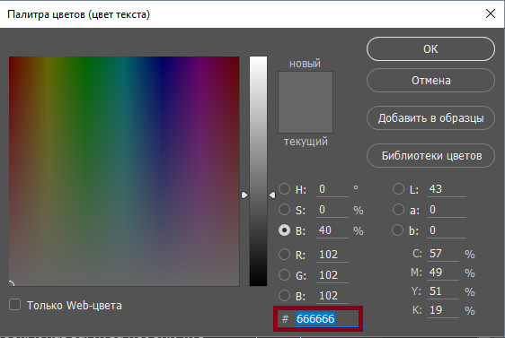 -
Открыть в редакторе кода main.css и добавить цвет текста в футере:
.footer { /* 1 rem = 1 размер шрифта элемента HTML = 10px */ font-size: 1.6rem; color: #666666; }
Выравнивание текста
Задание #6
-
Открыть Photoshop и панель Абзац и посмотреть какое выравнивание используется:
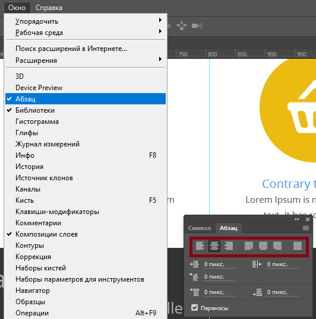
Используется выравнивание по центру. -
Открыть в редакторе кода main.css и добавить выравнивание текста в футере:
.footer { /* 1 rem = 1 размер шрифта элемента HTML = 10px */ font-size: 1.6rem; color: #666666; text-align: center; } -
Теперь в браузере остальные блоки не выровнены, можно добавить временный стиль для выравнивания временных изображений:
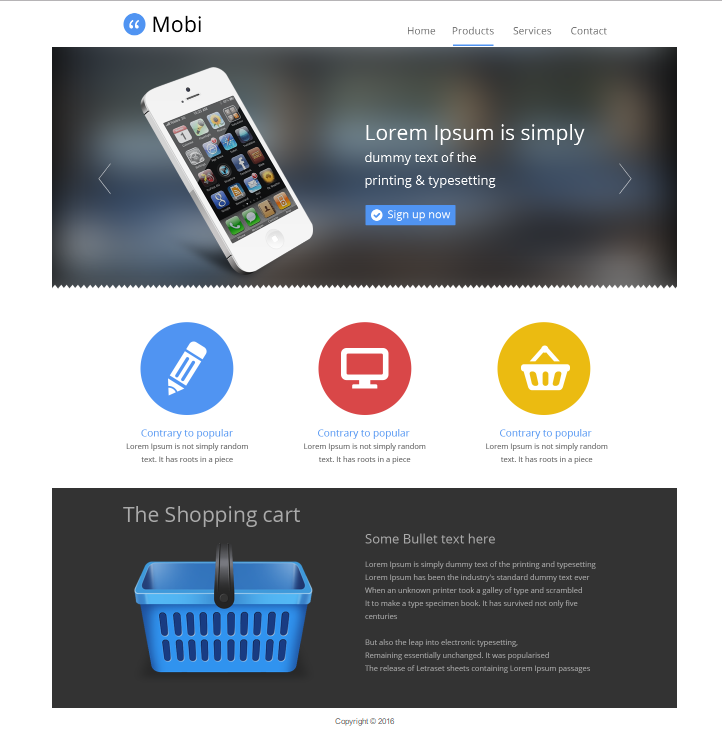.header, .carousel, .features, .content { text-align: center; }
Максимальная ширина области для текста
Задание #7
-
Открыть панель Инфо
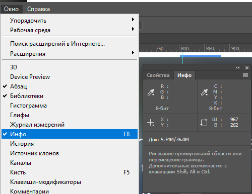 -
Открыть Photoshop и нажать M (режим прямоугольного выделения) и выделить область между внутренними направляющими:
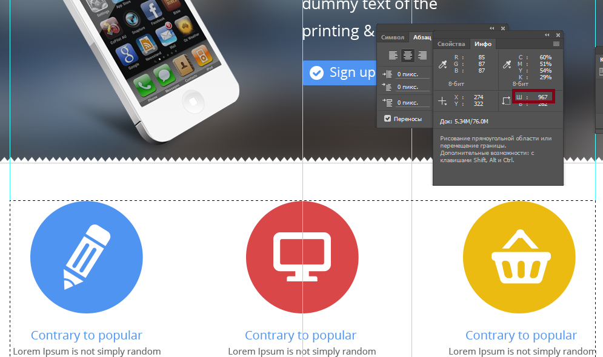
Максимальная ширина в макете 967px -
Задать максиальную ширину футера 967px и выравнивание по горизонтали с помощью margin: auto;
.footer { /* 1 rem = 1 размер шрифта элемента HTML = 10px */ font-size: 1.6rem; color: #666666; text-align: center; max-width: 967px; margin: auto; }
Отступы в блоке
Задание #8
-
Открыть Photoshop и нажать M, выделить отступ над текстом и запомнить значение, сделать то же самое для отступа снизу.
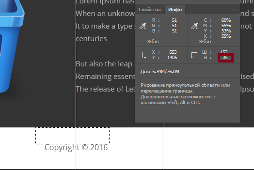
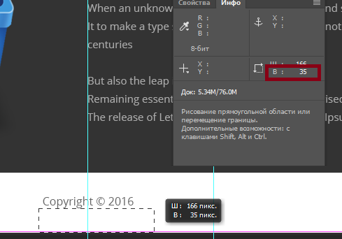
Отступ сверху и снизу составляет 35px
Отступы между направляющими составляет 50px — это отступы слева и справа для футера
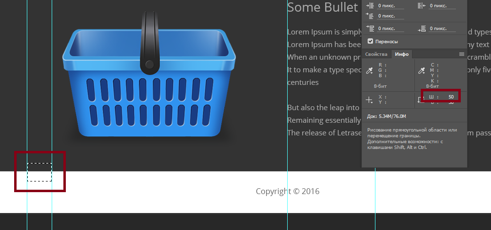 -
Обратить внимание что у нас уже есть отступ у параграфа по умолчанию, чтобы узнать какой это отступ, мы откроем DevTool (панель разработчика)
в браузере Chrome нажмите F12
При активной вкладке Elements в подвкладке Styles можно увидеть все стили и блочную модель выбранного элемента
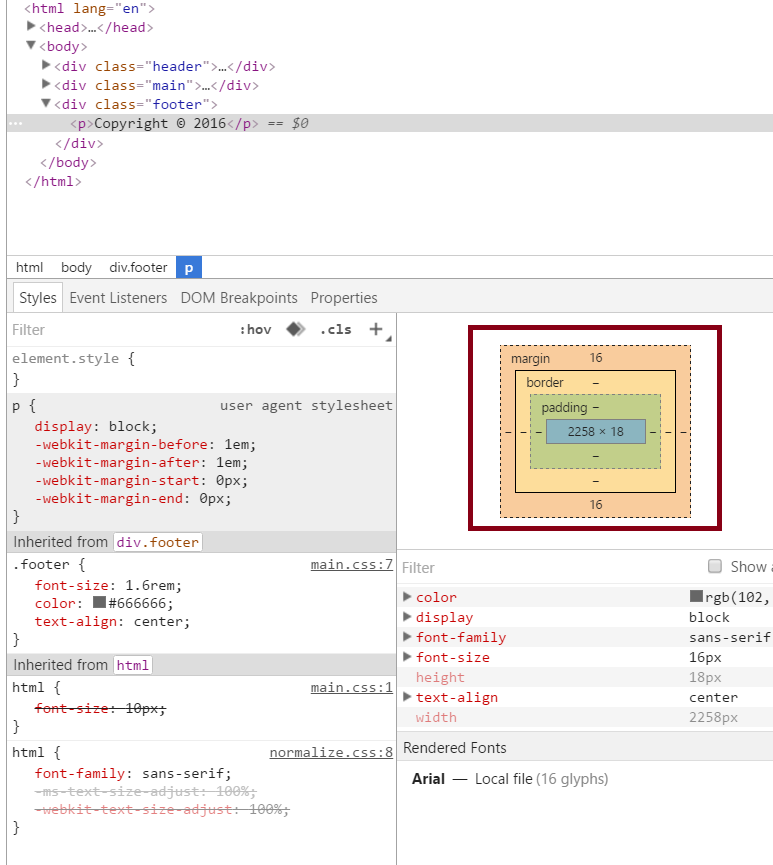
Так же панель для разработчика можно вызвать кликнув правой кнопкой над элементом и выбрав Посмотреть код
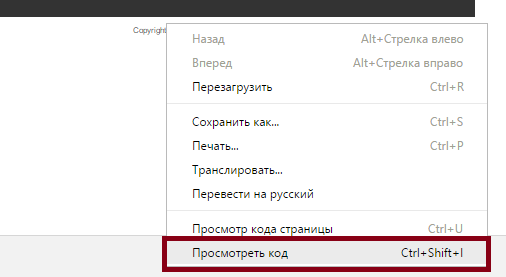 -
Надо обнулить отступы у параграфов футера
Добавим следующий код в CSS:
.footer p { margin: 0; } -
Теперь добавим внутренние отступы для футера
.footer { /* 1 rem = 1 размер шрифта элемента HTML = 10px */ font-size: 1.6rem; color: #666666; text-align: center; max-width: 967px; margin: auto; padding: 35px 50px; }
Давайте уменьшим ширину браузера и посмотрим насколько наш макет адаптивен.
Временные изображения не сжимаются давайте снова исправим это добавив в CSS:
img {
max-width: 100%;
}Итак первый блок готов.
Content
HTML
Содержание этого блока это ещё один контейнер, заголовок первого уровня, изображение, заголовок второго уровня и два параграфа.
Задание #9
-
Заменить временное изображение новым HTML-кодом
<div class="content"> <div class="content-inner"> <h1></h1> <img class="content-img" src="" alt="Cart" /> <h2></h2> <p></p> <p></p> </div> </div>
CSS
Необходимо пройти те же шаги что и для футера, максимальную ширину задать для внутреннего блока content-inner, фоновый цвет для самого блока content.
Задание #10
-
Открыть Photoshop и взять цвет фона блока content — нажать I и кликнуть на фон блока content

кликнуть на образец цвета и скопировать его в буфер обмена
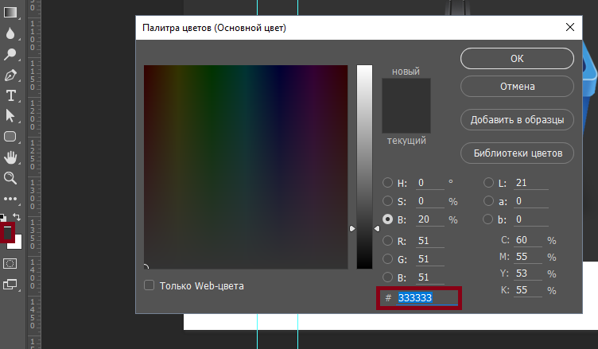 -
Вставить цвет фона для блока в CSS:
.content { background: #333333; } -
Сделать экспорт изображения корзины:
-
Выбрать слой с изображением и нажать на значок глаза зажав клавишу Alt (скрываем все слои кроме выбранного)
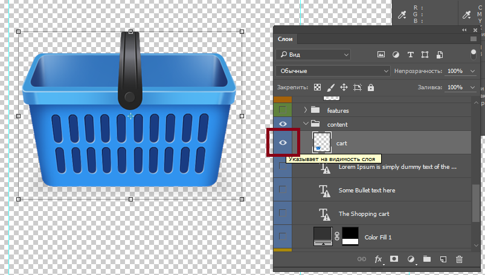 - Нажать M выделить область захватывающую изображение и нажать Ctrl C (скопировать в буфер обмена)
- Нажать Ctrl N чтобы создать новый документ, назвать его cart
- Вставить в новый документ из буфера обмена изображение нажав Ctrl V
-
Скрыть белый фон, нажав на изобраение глаза рядом со слоем
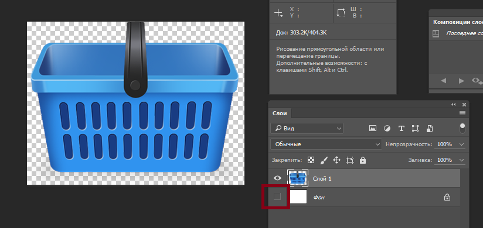 - Нажать Ctrl Alt Shift S (сохранить для веб) и сохранить изображение в формате PNG24 в папке img
-
Добавить путь к изображению в HTML-коде:
<div class="content"> <div class="content-inner"> <h1></h1> <img class="content-img" src="img/cart.png" alt="Cart" /> <h2></h2> <p></p> <p></p> </div> </div>
-
Выбрать слой с изображением и нажать на значок глаза зажав клавишу Alt (скрываем все слои кроме выбранного)
- Вставить нужный текст для заголовков и параграфов
- Добавить стили для внутреннего блока container-inner
- Добавить стили для заголовков и параграфов.
- Для размещения зображения слева нам понадобится CSS свойство float: left.
Задание #11
-
Добавить HTML код для блока features вместо временного изображения.
Это будет список содержащий изображение, подзаголовок и параграф. - Добавить стили для блока features.
Для упрощения задачи все изображения которые использовались в PSD подготовлены и выложены в архиве.
Задание
- Продолжить верстать остальные блоки, папку mobi скопировать на FTP в свою подпапку lesson-3 либо кинуть в Slack.
Домашнее задание
- Пройти курс Селекторы (первую часть) до конца.
- Пройти курс Блочная модель документа до "Ширина 100% и ширина по умолчанию".
- Пройти курс Позиционирование.
- Кто ещё не отправил — отправить мне ссылку на свой профиль.